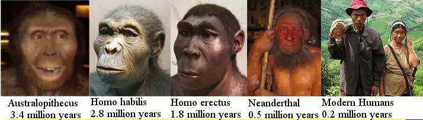

The Bible and Islamic traditions (link) both assert that Adam lived around 6,000 years ago. However, with the emergence of scientific discoveries, this claim has faced challenges, leading Islamic apologists to reassess their stance.
The reason for their reconsideration lies in the discoveries made by scientists. Fossil evidence of modern humans has been found, dating back approximately 300,000 years. For instance, an image of a human skull, known as SKHUL, has been dated to be around 100,000 years old (link).

Moreover, ancient cave paintings, such as the one depicting a hyena found in the Chauvet Cave in France, have been discovered and are estimated to be approximately 30,000 years old (link).

These scientific findings make it untenable for Islamic apologists to maintain the belief that Adam lived only 6,000 years ago. Consequently, they have adapted their position to assert that Adam likely lived at least 300,000 years ago, in alignment with the evidence presented by the fossils of modern humans.
Table of Contents:
- Scientific Proof: The "Stone Age" contradicts the claim that Adam existed before 10 thousand years ago
- Both the Bible and the Quran lack any knowledge of our ancestors' hunter-gatherer lifestyle that endured for approximately 290,000 years
- Agriculture also started only 10 thousand years ago
- The Bible, Quran, and other religious texts make no mention of the 'Ice Age.'
- Adam vs Iron Age
- The challenge of Noah's Ark for Muslims
- The oldest naval Ship is only 5 thousand years old
- Islamic claim: Humans have been decreasing in stature (height) since Adam's creation, who was 60 cubits tall
- Conclusion:
Scientific Proof: The "Stone Age" contradicts the claim that Adam existed before 10 thousand years ago
Islamic apologists, in response to evidence from modern human fossils, attempted to push back Adam's arrival to around 300 thousand years ago. However, the "Stone Age" undermines their argument.
The Stone Age is a significant period in human history, spanning from approximately 2.5 million years ago until just 10 thousand years ago.
The Stone Age is also divided into three different periods. Paleolithic or Old Stone Age: from the first production of stone artefacts, about 2.5 million years ago, to the end of the last Ice Age, about 9,600 BCE. This is the longest Stone Age period.
According to modern science, various hominids, including modern humans, Neanderthals, and Homo erectus, lived during the Stone Age. They relied solely on tools made of stones or bones for hunting and other activities until just 10 thousand years ago.
If we were to accept the premise that Adam arrived 300 thousand years ago, as suggested by modern human fossils, it raises questions that Islamic apologists must address. For instance:
- Why didn't Adam teach his descendants to use more advanced tools than simple stone tools?
- Why did his progeny continue to remain in the Stone Age for the next 290 thousand years, only emerging from it relatively recently?
This line of reasoning highlights the apparent inconsistency in the apologist's argument, particularly when considering the overwhelming evidence supporting the theory of evolution.
This theory of Islamic apologists (i.e. Adam came 300,000 years ago) becomes so ridiculous only while they have to deny the Theory of Evolution.
Both the Bible and the Quran lack any knowledge of our ancestors' hunter-gatherer lifestyle that endured for approximately 290,000 years
Like the Stone Age, our ancestors also stayed as Hunter-gatherers for at least 290 thousand years, and they started to make settlements only 10 thousand years ago.
A hunter-gatherer is a human living a lifestyle in which most or all food is obtained by foraging (gathering edible wild plants) and hunting (pursuing and killing wild animals), in the same way, that most natural omnivores do. In contrast to agricultural societies, which rely mainly on cultivating crops and raising domesticated animals for food production
But there is no mention of Hunter-gatherers in the Bible or in the Quran or any other religious book, while all these religions are much younger than 10 thousand years and their founders didn't know about the history of their ancestors.
The evolution and domestication of the following 3 animals played a vital role at the beginning of Herding Culture:
-
Domestication of Sheep (around 11 thousand years ago)
-
Domestication of Cows (around 10.5 thousand years ago)
-
Domestication of Dogs (around 15 thousand years ago)
Human settlements began to emerge as agriculture and herding practices took shape around 10,000 years ago. Prior to this, modern humans persisted as hunter-gatherers for an extensive span of at least 290,000 years.
As compared to domestic sheep and cows, we have fossils of millions of other animals which go back millions of years ago. And we also have cave paintings of a lot of animals, which go up to 50,000 years ago (link). For example, look at this cave painting from the Cave of Altamira, Spain.

But as far as domestic sheep and cows are concerned, then neither there exists any fossil of them nor any cave painting of them which is older than 11,000 years. The same is true about the dogs and neither any fossil of a dog is present, nor any cave painting present which is older than 14000 years.
Islamic stories portray Adam and his descendants as cultivators of crops and herders of domesticated animals, which sets them apart from the hunter-gatherer lifestyle. A specific verse (5:27) in the Quran and the commentaries of all Muslim Mufassirin present various traditions describing how Qabeel (son of Adam) offered a part of his crops as a 'sacrifice' to Allah, while his brother Habeel presented a sheep for the same purpose. These accounts reinforce the belief that Adam's lineage engaged in agricultural and herding practices rather than hunting and gathering.
For example, Ibn Kathir recorded this tradition and declared it to have a better than a good chain of narration (link):
وقال ابن أبي حاتم حدثنا الحسن بن محمد بن الصباح حدثنا حجاج عن ابن جريج، أخبرني ابن خثيم قال أقبلت مع سعيد بن جبير، فحدثني عن ابن عباس، قال نهى أن تنكح المرأة أخاها توأمها، وأمر أن ينكحها غيره من إخوتها، وكان يولد له في كل بطن رجل وامرأة، فبينما هم كذلك، إذ ولد له امرأة وضيئة، وولد له أخرى قبيحة دميمة، فقال أخو الدميمة أنكحني أختك، وأنكحك أختي، فقال لا، أنا أحق بأختي، فقربا قرباناً، فتقبل من صاحب الكبش، ولم يتقبل من صاحب الزرع، فقتله. إسناد جيد.
Ibn Abi Hatim recorded that Ibn Abbas said -- that during the time of Adam -- "The woman was not allowed in marriage for her male twin, but Adam was commanded to marry her to any of her other brothers. In each pregnancy, Adam was given a twin, a male and a female. A beautiful daughter was once born for Adam and another one that was not beautiful. So the twin brother of the ugly daughter said, `Marry your sister to me and I will marry my sister to you.' He said, `No, for I have more right to my sister.' So they both offered a sacrifice. The sacrifice of the one who offered the sheep was accepted while the sacrifice of the other (the twin brother of the beautiful daughter), which consisted of some crops, was not accepted. So the latter killed his brother.'' This story has a better than good chain of narration.
Tafsir Tabari, under verse 5:27 (link):
حدثنـي موسى بن هارون، قال: ثنا عمرو بن حماد، قال: ثنا أسبـاط، عن السديّ، فـيـما ذكر عن أبـي مالك، وعن أبـي صالـح، عن ابن عبـاس. وعن مرّة، عن ابن مسعود، وعن ناس من أصحاب النبـيّ صلى الله عليه وسلم: كان لا يولد لآدم مولود إلا ولد معه جارية، فكان يزوّج غلام هذا البطن جارية هذا البطن الآخر، ويزوّج جارية هذا البطن غلام البطن هذا الآخر. حتـى ولد له ابنان يقال لهما: قابـيـل، وهابـيـل، وكان قابـيـل صاحب زرع، وكان هابـيـل صاحب ضرع. وكان قابـيـل أكبرهما، وكان له أخت أحسن من أخت هابـيـل. وإن هابـيـل طلب أن ينكح أخت قابـيـل، فأبى علـيه وقال: هي أختي ولدت معي، وهي أحسن من أختك، وأنا أحقّ أن أتزوّجها. فأمره أبوه أن يزوّجها هابـيـل فأبى. وإنهما قرّبـا قربـاناً إلـى الله أيهما أحقّ بـالـجارية، وكان آدم يومئذ قد غاب عنهما إلـى مكة ينظر إلـيها، قال الله لآدم: يا آدم، هل تعلـم أن لـي بـيتاً فـي الأرض؟ قال: اللهمّ لا قال: فإن لـي بـيتاً بـمكة فأته فقال آدم للسماء: احفظي ولدي بـالأمانة، فأبت. وقال للأرض فأبت، وقال للـجبـال فأبت، وقال لقابـيـل، فقال: نعم تذهب وترجع وتـجد أهلك كما يسرّك. فلـما انطلق آدم قرّبـا قربـاناً، وكان قابـيـل يفخر علـيه، فقال: أنا أحقّ بها منك، هي أختـي، وأنا أكبر منك، وأنا وصيّ والديّ. فلـما قرّبـا، قرّب هابـيـل جذعة سمينة، وقرّب قابـيـل حُزمة سنبل، فوجد فـيها سنبلة عظيـمة ففركها فأكلها. فنزلت النار فأكلت قربـان هابـيـل، وتركت قربـان قابـيـل، فغضب وقال: لأقتلنك حتـى لا تنكح أختـي فقال هابـيـل { إنَّـمَا يَتَقَبَّلُ اللَّهُ مِنَ الـمُتَّقِـينَ }.
Translation:
It was narrated from as-Suddi, in his narration from Abu Maalik and from Abu Saalih from Ibn ‘Abbaas, and from Murrah from Ibn Mas‘ood, and from some of the companions of the Prophet (blessings and peace of Allah be upon him): No son was born to Adam but a daughter would be born with him, and the boy from this pregnancy would marry the girl from another pregnancy, and the girl from this pregnancy would marry a boy from another pregnancy. This continued till two boys Qabeel and Habeel were born. Qabeel was a grower of crops, and Habeel kept the livestock of animals. Qabeel was the elder one, and the sister that was born along with him was more beautiful than the girl who was born along with Habeel. When Habeel wished to marry the sister of Qabeel, then Qabeel refused to accept it and said: "She is my sister as she was born along with me, and she is more beautiful than your sister, and thus I have more right to marry her. But his father (i.e. Adam) ordered him to let Habeel marry her, but Qabeel still refused. And both of them offered a sacrifice to see who had more right upon that girl ... Habeel offered a fat lamb as offering, while Qabeel offered a sheaf of corn, but took out a big corn from it and ate it. Fire came down (from heaven) and consumed the offering of Habeel, but not that of Qaabeel [i.e., Haabeel’s offering was accepted and Qaabeel’s was not]. Upon that Qabeel became angry and he said: "I will certainly kill you, and you will not be able to marry my sister.
Grade: Sahih (Albani)
Agriculture also started only 10 thousand years ago
The practice of agriculture, including the cultivation of crops, began only around 10 thousand years ago during the Neolithic Period, which followed the end of the ice age.
Despite this historical evidence, both the Bible and the Quran assert that Adam initiated agriculture upon his arrival on Earth. In verse 5:27 of the Quran, along with its commentary by Ibn Jarir Tabari (link), multiple traditions are recorded describing how Qabeel (son of Adam) offered a part of his crop as a 'sacrifice' to Allah, while his brother Habeel presented a sheep for the same purpose. Similarly, other traditions mentioned by Ibn Kathir discuss the sacrifice of sheep and crops by the sons of Adam.
Thus, the cultivation of crops and the presence of domestic sheep also prove that the story of Adam cannot be older than 10 thousand years.
The Bible, Quran, and other religious texts make no mention of the 'Ice Age.'
The Ice Age (link), which concluded approximately 10 thousand years ago, finds no reference in these ancient scriptures.
The absence of such knowledge can be attributed to the fact that these religious texts were authored much more recently than 10 thousand years ago. Consequently, their human creators lacked awareness of events that transpired thousands of years before their time, including the Stone Age and the Ice Age.
Adam vs Iron Age
Surprisingly, humans began utilizing iron a mere 3500 years ago (link), marking the inception of the Iron Age. Before that, approximately 5500 years ago, they had discovered bronze, leading to what is known as the Bronze Age.
Preceding the Bronze Age was the Copper Age, bridging the gap between the Stone Age and the Bronze Age.
The Homo species began crafting tools from stone around 2.5 million years ago, a practice that persisted until about 10 thousand years ago. Subsequently, the Stone Age transitioned into the Copper Age, during which humans adopted the use of copper for toolmaking.
The challenge of Noah's Ark for Muslims
According to the bible, the gap between Adam and Noah was 1056 years.
And this gap is the same according to Islam too. Saudi Salafi Mufti at Islam Question Answer wrote (link):
The period between Adam and Nooh (peace be upon them both): it was narrated from Abu Umaamah that a man said: “O Messenger of Allaah, was Adam a Prophet?” He said, “Yes, and Allaah spoke to him.” The man asked, “How much (time) was there between him and Nooh?” He said, “Ten centuries.” Narrated by Ibn Hibbaan in his Saheeh, 14/69; and by al-Haakim, 2/262. He said it is saheeh according to the conditions of Muslim, and al-Dhahabi agreed with him. Ibn Katheer said in al-Bidaayah wa’l-Nihaayah (1/94): this is (saheeh) according to the conditions of Muslim, even though he did not narrate it.
On one hand, the fossils of modern humans and other homos compel Muslims to claim that Adam came at least 300,000 years ago, but on the other hand, they are unable to tell how Noah could have constructed such a massive vessel using only stone and bone tools..
In the Quran, Noah's Ark is described as being made of "planks and nails" (Quran 54:13), implying that it was not a primitive construction from the Stone Age. Instead, it suggests the use of more advanced materials like wood, indicating a level of technology beyond that of the Stone Age.
Quran 54:13:
And We carried him on (ark) made of planks and nails,
Remember, Muhammad came only 1400 years ago, and till his time, iron nails were available and used for naval shipbuilding.
The dilemma arises from the immense size of the ark, which was tasked with carrying pairs of animals from across the entire world, along with their food and water. Such an undertaking would require modern technology and tools, and even with today's technology, the largest wooden ship is only about 100 meters long. Furthermore, modern ships of this size rely on iron nails and steel wires to hold the planks together.
Even with the modern technology of today, the biggest ship, which is made out of wood, is only 100 meters long (link), even though not only a lot of iron nails have been used in it, but they also had to use steel wires in order to keep the planks together.
The question remains: how could Noah have built such a colossal ark 300,000 years ago without access to the technology we have today, including iron wires or ropes? This paradox raises intriguing challenges for Muslims seeking to reconcile the traditional timeline with the account of Noah's Ark as described in their religious texts.
The oldest naval Ship is only 5 thousand years old
One of the issues faced by Muslims is related to the age of the oldest naval ship.
According to scientific discoveries (link), the oldest known naval ship is approximately 5 thousand years old, and it was built by the ancient Egyptians. These early Egyptian ships were quite rudimentary, constructed with planks for the hulls and tied together with ropes since the technology for making nails was not yet available.
Researchers have come across numerous paintings depicting these early naval ships, which are around 5 thousand years old. However, there is a significant absence of any paintings representing more advanced ships older than 5 thousand years. Additionally, there are no 'cave paintings' featuring any type of naval ship, despite the existence of cave paintings dating back as far as 50,000 years.
As a result, this raises questions for Muslims seeking to reconcile the age of the oldest naval ship with their historical and religious beliefs. The evidence points to the fact that advanced shipbuilding techniques and representations of such ships did not exist before the time of the early Egyptian vessels, further challenging traditional narratives.
Here is an image of an Egyptian boat from about 4 thousand years ago.

These Egyptian boats were the most advanced boats in the world from 4000 to 5000 years ago.
Islamic claim: Humans have been decreasing in stature (height) since Adam's creation, who was 60 cubits tall
Muhammad claimed that Adam was 60 cubits tall, and the height of humans has been progressively decreasing since Adam's creation.
Narrated Abu Huraira: The Prophet (ﷺ) said, "Allah created Adam, making him 60 cubits tall ... Any person who will enter Paradise will resemble Adam (in appearance and figure). People have been decreasing in stature since Adam's creation.
Muhammad made such stories while he thought that no one was able to certify or deny such fairy tales.
However, modern science has provided evidence that contradicts these claims and has the capacity to verify or dismiss such assertions. Scientists have discovered human fossils dating back 300 thousand years, and all of them exhibit the typical height of present-day humans. Additionally, fossils of the Homo family, which go back as far as 3.4 million years, also demonstrate the same height as modern humans.
These scientific findings challenge the notion that humans have been diminishing in stature since Adam's creation. As a result, it is essential to critically examine ancient beliefs in light of contemporary knowledge and evidence to achieve a deeper understanding of our history and origins.
The emergence of Neanderthals and Homo erectus has led Islamic preachers to assert a new, implausible claim that Adam existed 1.8 million years ago

While the earliest fossils of modern humans date back approximately 300,000 years, the earliest known Neanderthal-like fossils are around 0.5 million years old.
Between 1 to 4 percent of the DNA in Europeans and Asians is identified as non-modern, sharing similarities with ancient Neanderthal DNA rather than that of Sub-Saharan Africans. Recent research even suggests a higher prevalence of Neanderthal genes in non-African humans than previously thought, with approximately 20% of the Neanderthal gene pool found in a broad sample of non-African individuals. Despite this, each individual's genome averages only 2% Neanderthal (Source).
The existence of Neanderthals prompted creationists, including Islamic preachers, to argue that Neanderthals were not a distinct species but rather humans. Consequently, they claim that Adam existed 0.5 million years ago. According to this perspective, humans supposedly endured the Stone Age for half a million years, utilizing only tools crafted from stones and bones, and emerged from this era only 10,000 years ago.
However, the narrative did not conclude with Neanderthals. Human-like fossils of Homo erectus, dating back 1.8 million years, compelled creationists to assert that Adam existed 1.8 million years ago (Source). This claim becomes even more absurd, as it implies, according to creationists, that humans persisted in the Stone Age for 1.8 million years, relying solely on tools fashioned from stones and bones, and transitioned out of this era only 10,000 years ago.
Conclusion:
In conclusion, modern science has presented significant challenges for Muslims.
- If Muslims adhere to their traditions and early scholars, accepting that Adam arrived 6000 years ago, the discovery of 300 thousand years old fossils of modern humans directly contradicts their beliefs.
- On the other hand, if Muslims contend that Adam existed 300 thousand years ago, inconsistencies arise when examining the story of Adam's son and the development of cultivation and herding practices. Furthermore, it raises questions about why Adam's descendants remained in the Stone Age for the subsequent 290 thousand years and how Noah managed to construct such an enormous ark during that time.
These conflicting narratives create dilemmas for Muslims, which they are unable to solve.


 Hassan Radwan
Hassan Radwan